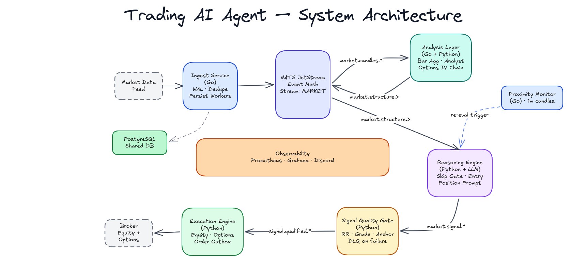

The Challenge
The promise of LLMs in finance is often hampered by their stochastic nature. Standard "chatbot" approaches fail because they lack grounding in real-time market data and tend to hallucinate narratives that don't exist in the numbers.
I wanted to build a system that treated the LLM as a reasoning engine, not a source of truth. This meant building a "harness" that could feed it structured context and verify its logic before any action was taken.
Architecture Deep Dive
The system is built on an event-driven, decoupled architecture that separates high-frequency ingestion (Go) from probabilistic reasoning (Python). This ensures that the reasoning engine operates on a standardized, canonical data stream regardless of the provider.

Click to zoom. This system map illustrates the decoupled Go-to-Python handoff and the multi-stage reasoning harness.
1. Grounding via Pre/Post Hooks
To ensure data-driven execution, the Context Injector (Pre-hook) pulls the latest technical indicators, order book depth, and sentiment analysis. This grounding ensures the LLM operates on a structured "world view" of current market facts.
The Validator (Post-hook) enforces architectural invariants, ensuring the output matches a strict JSON schema and performs safety checks against risk limits before any trade is proposed.
2. The Critique Loop
A separate Critique Agent acts as a "Red Team" within the reasoning pipeline. It receives the primary decision and attempts to invalidate the logic using adversarial reasoning. This approach reduces Impulse-based trades and ensures every signal survives a layer of structured skepticism.
3. Reliable State & Idempotency
In a distributed trading system, at-least-once delivery and idempotency are non-negotiable. I implemented the Transactional Outbox Pattern to ensure that signals and orders are persisted to PostgreSQL before being published to NATS. This atomicity guarantees that no "intent to trade" is lost, and the executor can safely retry placements without risk of duplicate orders.
Strategic Decisions
The ingestion layer was built in Go to handle high-concurrency WebSocket feeds. To manage high-frequency tick data, I implemented a layered deduplication strategy using Redis as an L2 cache, ensuring that only unique, actionable events propagate downstream to the reasoning engine.
While these frameworks are great for prototyping, I chose to build the orchestration logic from scratch. This provided full control over the execution flow, explicit instrumentation points for distributed tracing and telemetry, and avoided the "framework magic" that makes production debugging difficult.